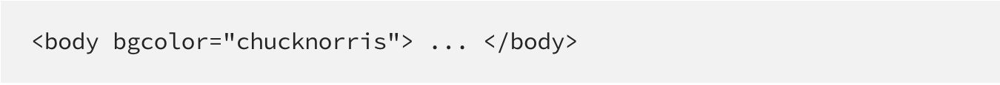
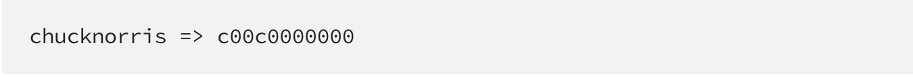
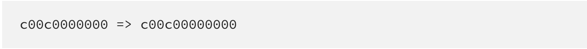
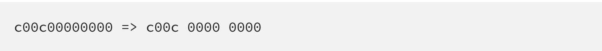
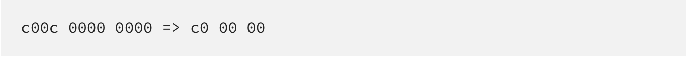
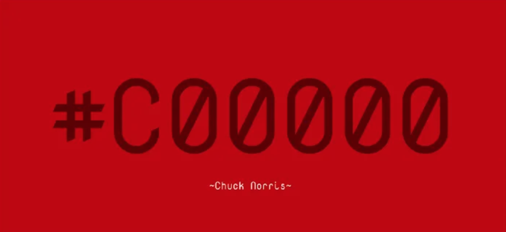

русский
ПРИВЕТ
Вот такие цвета получились, если в color мы напишем в качестве обозначения цвета #BruceWillis и #CANDY.
Давайте разберемся, почему же так получается?
АЛГОРИТМ
В современном HTML (HTML5) bgcolor и color признаны устаревшими, но браузеры все равно могут распознавать и выполнять эти атрибуты. Обычно они ожидают значение цвета, следовательно, если передать этим атрибутам строку, то HTML постарается преобразовать ее в hex-код и применить его в виде значения. Алгоритм, реализующий это преобразование, состоит из семи шагов. При этом он способен конвертировать любую не-hex строку в hex-код.
- Браузер пробует распознать цвет.
- Если ему это не удается, находит hex-символы.
- Заменяет все не-hex символы на 0.
- Если количество символов не кратно 3, добавляет 0, пока оно таковым не станет.
- Делит вывод предыдущего шага на три равные части.
- Каждая часть усекается до двух символов путем удаления всех, кроме двух первых.
- Усеченные части поочередно объединяются, и в результате получается hex-код.
Вот этот самый алгоритм и превращает Чака Норриса в красный. Далее мы применим его шаг за шагом и посмотрим, действительно ли Чак — это красный.
1. Распознавание атрибутов

Браузер начинает интерпретировать HTML для формирования содержимого сайта. Он проходит по всему элементу тела (body) и видит в нем атрибут bgcolor, определяющий фоновый цвет этого элемента.
Браузер видит атрибут bgcolor как chucknorris, который не является названием цвета или значением RGB. Тогда он решает, что переданное значение должно быть шестнадцатеричным, но в зашифрованном виде, и запускает алгоритм конвертации.
3. Замена символов

Hex-значения состоят из 16 разных символов, которые могут включать цифры от 0 до 9 и буквы от A до F. Прочие символы к шестнадцатеричным не относятся. На этом шаге браузер заменяет все не-hex символы на 0, который является шестнадцатеричным. В chucknorris единственным hex-символом является c, значит все остальные заменяются на 0.
4. Добавление нулей

Цвета в цифровом пространстве состоят из трех компонентов, а именно красного, зеленого и синего (RGB). Именно поэтому из созданной на предыдущем шаге строки необходимо извлечь три части. Однако, как можно заметить, выходная строка содержит 11 символов, которые поровну на три части не делятся. Следовательно, согласно алгоритму, браузер должен добавить в конец этой строки один 0 .
5. Извлечение трех каналов (RGB)

Теперь, когда строка состоит из 12 символов, браузер может разделить ее на 3 равные части, каждая из которых будет представлять цветовой канал слева направо: красный, зеленый и синий.
6. Усечение строк

Каждая подстрока содержит четыре символа. Тем не менее браузеру для формирования hex-кода цвета от каждого канала нужно лишь по два. На этом шаге подстроки усекаются до двух символов, чтобы удовлетворить этим требованиям. Делается это путем удаления всех символов, кроме первых двух.
7. Формирование hex-кода

Пришло время формирования hex-кода и закрашивания фонового цвета Чаком Норрисом. У нас есть красный, зеленый и синий каналы по-отдельности. Для создания из них hex-кода нужно добавить в начало # и следом поочередно разместить их значения.
Та-дааа! Мы только что извлекли шестнадцатеричный код из chucknorris, представленный как #C00000, то есть темно красный.
Безопасная палитра
При создании изображений или подборе цветов для фона, физуалов и текста одной из проблем является правильная цветопередача на разных платформах. Броузеры вынуждены при выводе графических файлов на экран изменять их палитру. Им приходится приводить к общему знаменателю палитру всех файлов, включенных в одну страницу, а в некоторых случаях броузеру приходится также приспосабливать палитру файла к фиксированной системной палитре.
Чтобы эти неизбежные преобразования не приводили к совсем уж неприемлемым результатам, все соврпменные броузеры пользуются при замещении палитры диффузией. Когда броузер не может правильно передать какой-либо оттенок, он подбирает похожий или смешивает несколько ближайших цветов.
Обычно это происходит при попытках видеоадаптера в режиме 256 цветов показать оттенок High Color (16 бит) или True Color (24 бита). Кроме того, каждая операционная система резервирует и переопределяет эти цвета по-своему. Да еще это зависит от модели монитора, видеокарты и степени их старости.
Прочитать подробнее можно тут